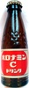
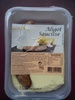
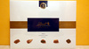
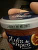
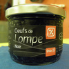
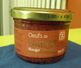
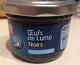
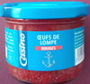
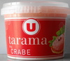
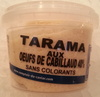

Open Food Facts - World

Let's open yogurts from all around the world! On Open Data Day 2014, Open Food Facts launches the What's in my yogurt? project.
Help us to collect information and data (ingredients, nutrition facts etc.) on food products from all around the world. In a few minutes, you can easily add products and contribute to improve food for everyone.
The collected data is then usable and reusable freely:
To help you to make better choices
- to decipher labels: which food additives should you avoid?
- to compare products and to find better alternatives
- to find products that do not contain (or contain less) substances that you want to avoid: fat, salt, additives, allergens etc.
To motivate the industry to offer better products
- by grading products and publishing nutritional comparisons.
- by checking allegations like "25% less sugar/salt/fat than other products from the same category".
To help research
- by combining the data with other data, researchers can find correlations and try to establish the link between some ingredients and affections.
... and for all the other uses we have not thought about! By making this data publicly available for free and for all uses, you are not limited by our imagination, and people from all around the world will find thousand of usage ideas that we would never have thought about.
Got ideas? Share them on the Idea Forum!
Last products added:
→ products being added (in particular products added with the iPhone, Android and Windows Phone apps)
30889 produits :
- Tuiles apéro goût crème oignon - Leader Price - 170 g
- Galette des rois pommes - Délices de Kerloch - 400 g
- Barres céréales canneberge - Crownfield - 200 g
-
Mike pop corn バターしょうゆ味 - Frito Lay - 50g

-
オロナミンCドリンク (Oronamin C Drink) - オロナミン - 120ml
-
Aligot saucisse - Les Gastronautes - 350 g
- Céréales fourrées au lait - Crownfield - 750 g
-
Lindola - Lindt - 440 g
-
Œufs de Lompes Rouges - Leader Price - 100 g
-
Oeufs de Lompe Noir - Dia - 100 g
-
Oeufs de Lompe Rouge - Dia - 100 g
-
Œufs de Lump Noirs - Ronde des Mers - 100 g
-
Œufs de lompe rouges - Casino - 100 g
- Barres céréales Chocolat + Banane - Crownfield - 200 g
-
Tarama Au Crabe - U - 100 g
- Choco Hoops - Crownfield - 500 g
- Riz soufflé au chocolat - Crownfield - 500 g
- Tarama aux œufs de cabillaud (25 %) - Comptoir du caviar - 250 g
-
Tarama aux oeufs de cabillaud 40 % - Comptoir du caviar - 100 g
-
Tomates cherry "Vicasol" - 500 g